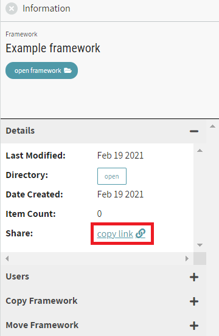
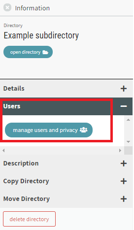
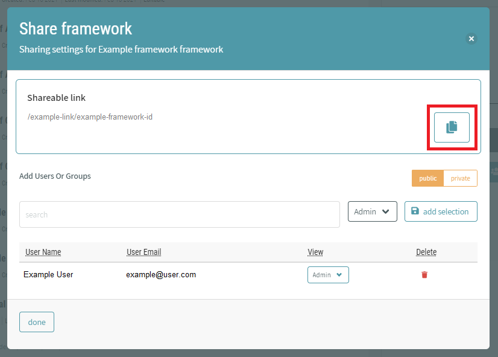

# Managing Users and Sharing
Directories, Frameworks, and Resources can be shared with other users either by sharing a link to the item or by adding owners and readers (adding users with Admin or View privileges) to the item.
You can only manage users on an item if you are an owner (listed as Admin) for the item.
# Sharing a Link to a Directory or Framework
To copy a link to a directory or framework, click on the name of the item to show its Information on the right side panel. In the "Details" section of the Information panel, click on "copy link" to copy the shareable link to your clipboard.
This option offers a method for sharing directories, given that exporting directories is not available at this time.

# Managing Users for an Item
To control who can view and edit a directory, framework, or resource, click on the item to show it in the Information Panel. In the "Users" section of the Information panel, click on "manage users and privacy".

A dialogue window shows options for adding Users or Groups to the item. You can view the current list of users with privileges (Admin or View), add new users or organizations, or delete current users or organizations.
The dialogue has an option to set the item as Public or Private. Public items will be viewable by all users. Additionally, public frameworks can be exported when opened.
For directories and frameworks, a shareable link shows at the top of the window and provides a button to copy the link to your clipboard. This option offers a method for sharing directories, given that exporting directories is not available at this time.
